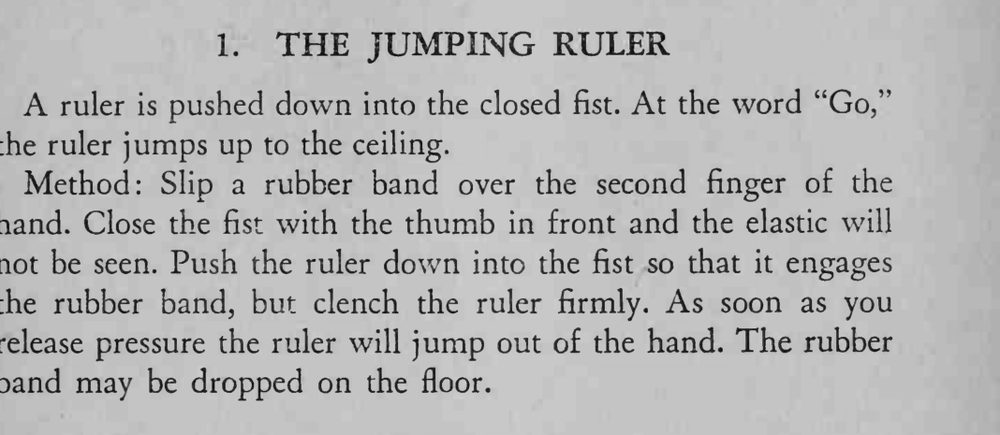

魔术师把直尺按进握紧的拳头，喊一声「走」，直尺就从拳里自己跳了出来。
直尺要钩住皮筋又不能露出来，拳心朝自己更保险。

A ruler is pushed down into the closed fist. At the word "Go," the ruler jumps up to the ceiling. Method: Slip a rubber band over the second finger of the hand. Close the fist with the thumb in front and the elastic will not be seen. Push the ruler down into the fist so that it engages the rubber band, but clench the ruler firmly. As soon as you release pressure the ruler will jump out of the hand. The rubber band may be dropped on the floor.